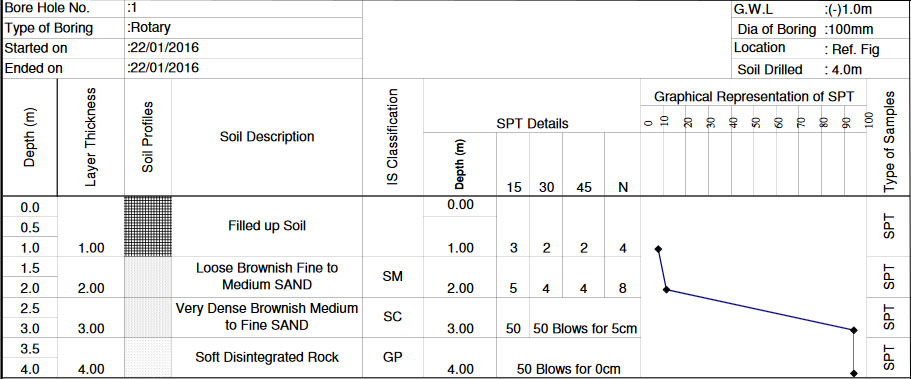

The field and laboratory studies carried out for obtaining the necessary information about the subsoil characteristics including the position of ground water are termed as Geotechnical.
InvestigationThe site investigation is thus able to give information about following: |
|  |